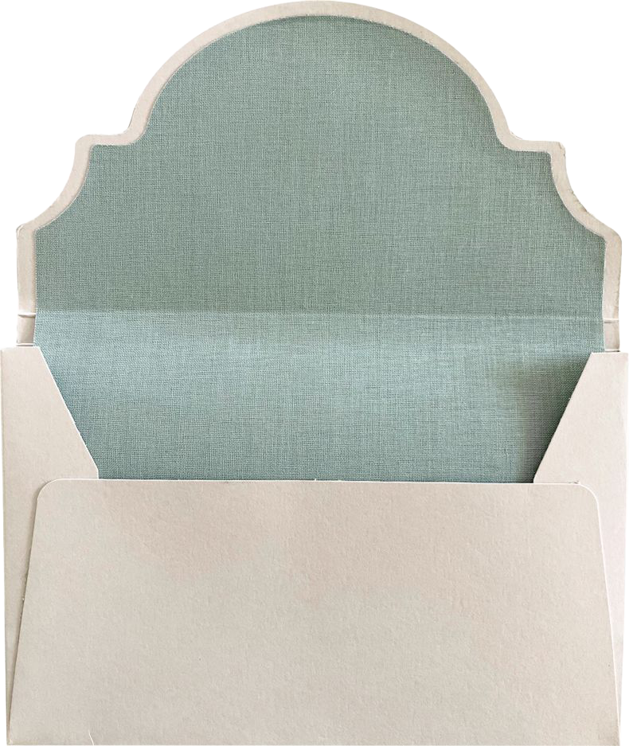

DearStranger
Some things are hardest to tell the people you're closest to. Maybe the relationship would shift, maybe your school is too small, maybe you just want to think about it for a minute first. Write a letter to a stranger instead. You pick who reads it.
Write the letter you can't send.


Write your letter